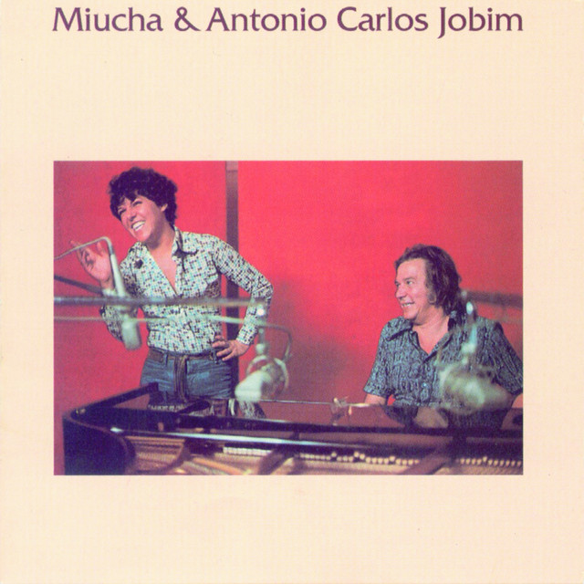

{Logo Player}
Home
Arquivo
Player
Login
Voltar
MPB
Exagerado
1985 • Cazuza
Como Eu Quero (Ao Vivo)
2002 • Kid Abelha
Velha Infância
2002 • Tribalistas
O Descobridor dos Sete Mares
1983 • Tim Maia
Mania De Você
1979 • Rita Lee
Eternamente
1983 • Gal Costa
Samurai
1982 • Djavan
Você Me Vira A Cabeça (Me Tira Do Sério)
2001 • Alcione

Pela Luz dos Olhos Teus (Bonus Track)
1977 • Miúcha, Tom Jobim
Lágrimas Negras
1974 • Gal Costa